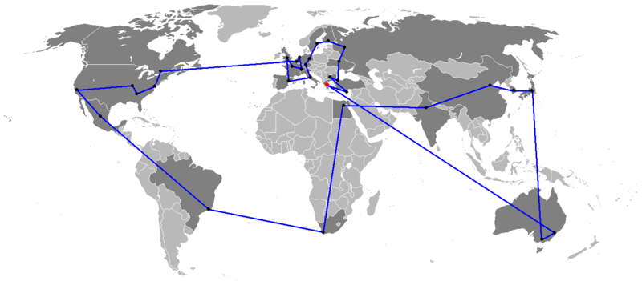

|
 |
| Esta es una tradición que se celebra antes de todos los Juegos Olímpicos. Esta tradición apareció por primera vez en Berlín en 1936. |
| La llama olímpica, encendida con un espejo cóncavo parabólico de los rayos del sol en Grecia, fue llevada a Berlín con la ayuda de tres mil trescientos treinta y un corredores-atletas. Así, habiendo recorrido una distancia de más de tres mil kilómetros. |
| Métodos de transporte inusuales |
| Los corredores suelen participar en el Relevo de la Antorcha Olímpica, pero también se utilizan otros medios de transporte. Por ejemplo: en 1952, la entrega de fuego en avión y el esquí de fondo se incluyeron en el relevo; en 1988 - entrega en moto de nieve; en 1992 - entrega por avión supersónico; en 2002 - entrega en trineos tirados por perros, trineos y motos de nieve, en 2006 - entrega en un automóvil del equipo Ferrari y una góndola veneciana. |